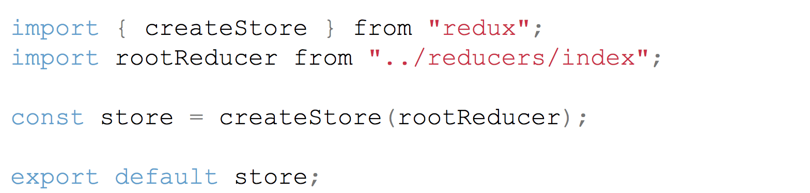
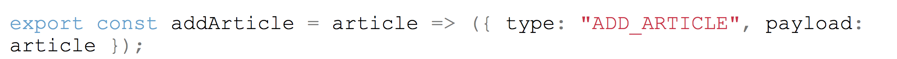
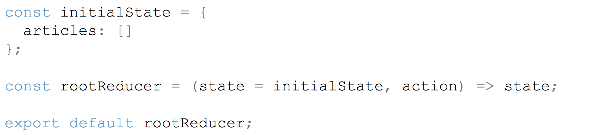
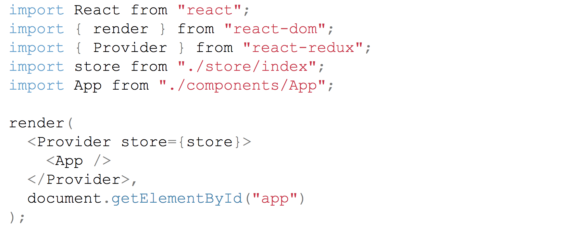
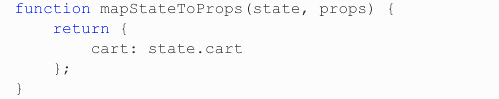
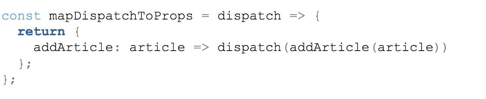
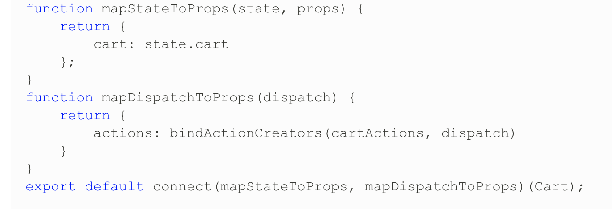
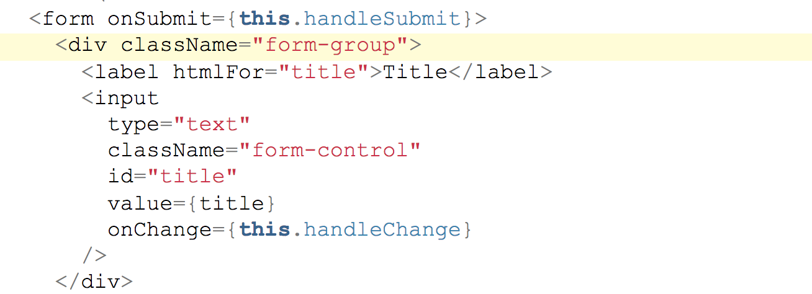
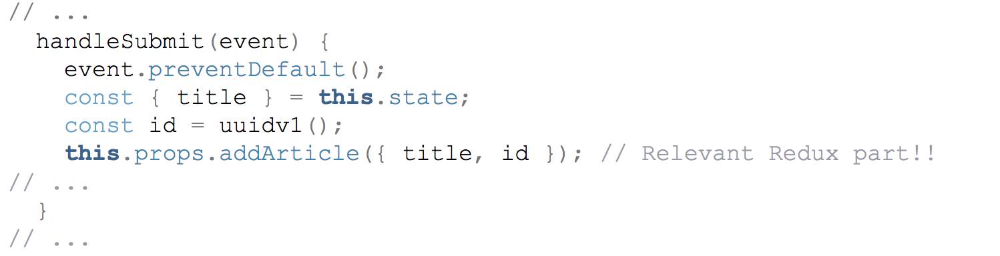

class: spaced layout: true --- class: inverse, center, middle # Redux ### [State Management](https://redux.js.org/introduction) --- class: center [Redux Diagram](https://app.schoology.com/course/1447096889/materials/gp/1572087335) <div class="imgs"> <img width="500px" src="Images/Redux/ReduxDiagram.png"> </div> --- # Principles of Redux - The state of your whole application is stored in an object tree within a __single store__. - The only way __to change the state is to emit an action__, an object describing what happened. - To specify how the state tree is transformed by actions, you write __pure reducers__. - The state is immutable and cannot change in place --- class: center # The Store __Principle #1__: State of entire application lives inside the store. <div class="imgs">  </div> - A store holds the whole state tree of your application. The only way to change the state inside it is to dispatch an action on it. - A store is not a class. It's just an object with a few methods on it. To create it, pass your root reducing function to createStore. --- # Store methods - [getState()](https://redux.js.org/api-reference/store#getState) - Returns the current state tree of your application. It is equal to the last value returned by the store's reducer. - [dispatch(action)](https://redux.js.org/api-reference/store#dispatch) - Dispatches an action. This is the only way to trigger a state change. - [subscribe(listener)](https://redux.js.org/api-reference/store#subscribe) - Adds a change listener. - [replaceReducer(nextReducer)](https://redux.js.org/api-reference/store#replaceReducer) - Replaces the reducer currently used by the store to calculate the state. --- __getState__ for accessing the current state of the application ```Javascript store.getState() ``` __dispatch__ for dispatching an action ```Javascript store.subscribe(() => console.log('Digital Crafts')) ``` __subscribe__ for listening on state changes ```JavaScript store.dispatch( addArticle({ name: 'React Redux Lecture at Digital Crafts', id: 1 }) ) ``` --- # Actions __Principle #2__: The only way __to change the state is to emit an action__, an object describing what happened. <div class="imgs">  </div> - Nothing more than Javasript objects - Every action needs a type property for describing how the state should change - Need a payload - Best practice to wrap every action within a function, called action creator --- # The Reducers __Principle #3__: To specify how the state tree is transformed by actions, you write __pure reducers__. <div class="imgs">  </div> - When the store needs to know how an action changes the state, it asks the reducers. - rootReducer combines all of the reducers - Plain Javascript function with two parameters - Reducer knows how to produce the next state because of actions --- # Pure Function - Given the same input, will always return the same output. - Produces no side effects. - Relies on no external mutable state. --- # Pure Function Example ``` Javascript function square(x){ return x * x; } ``` ```Javascript return items.map(square); ``` --- # Impure Function Example ```Javascript function square(x){ update x in Database(x); return x * x; } ``` ```Javascript function squareAll(items){ for (let i = 0; i < items.legth; i++){ items[i] = square(items[i]); } } ``` --- # Avoiding Mutations There are two key points for avoiding mutations in Redux: - Using [concat()](https://developer.mozilla.org/en-US/docs/Web/JavaScript/Reference/Global_Objects/String/concat), [slice()](https://developer.mozilla.org/en-US/docs/Web/JavaScript/Reference/Global_Objects/String/slice#Specifications), and […spread](https://developer.mozilla.org/en-US/docs/Web/JavaScript/Reference/Operators/Spread_syntax) for arrays - Using [Object.assign()](https://developer.mozilla.org/en-US/docs/Web/JavaScript/Reference/Global_Objects/Object/assign) and …spread for objects --- # Provider - Connects Redux to React - [Provider](https://github.com/reactjs/react-redux/blob/master/docs/api.md#provider-store) is an high order component - Provider wraps up your React application and makes it aware of the entire Redux’s store. <div class="imgs">  </div> --- # Container - Like components - Bind providers and component together - mapStateToProps - mapDispatchToProps --- # mapStateToProps <div class="imgs">  </div> What does mapStateToProps do in react-redux? mapStateToProps does exactly what its name suggests: it connects a part of the Redux state to the props of a React component. By doing so a connected React component will have access to the exact part of the store it needs. --- # mapDispatchToProps You can see how the action gets dispatched in the handleSubmit method: <div class="imgs">  </div> --- # export functions <div class="imgs">  </div> --- # Form Submit <div class="imgs">  </div> --- # handleSubmit <div class="imgs">  </div> --- # Getting Started ```bash create-react-app ``` ```bash npm install redux --save ``` ```bash npm install react-redux --save ``` --- # File Structure navigate to the src folder and create the following - store.js - components folder - reducers folder ---